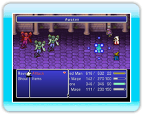
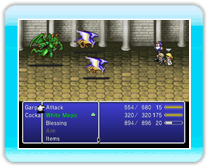

22 |
Het vechtscherm / besturing |
 |

Sommige strijdbesturingen kunnen door elk personage worden uitgevoerd, maar er zijn ook besturingen (vaardigheden genoemd) die uniek zijn voor een bepaald personage. In dit hoofdstuk worden de gemeenschappelijk besturingen uitgelegd en ook een aantal vaardigheden.
● “Attack” (aanvallen) (gemeenschappelijk)Voer een fysieke aanval uit met de huidige uitrusting van je personage. Je moet een doelwit kiezen om aan te vallen.
● “Items” (voorwerpen) (gemeenschappelijk)Gebruik een voorwerp uit je inventaris. Kies het voorwerp en vervolgens het doelwit om het op te gebruiken

Van uitrusting veranderenAls je net boven het voorwerpenscherm ● “Band” (gemeenschappelijk)Voer een eerder geleerde “Band” uit of probeer een nieuwe “Band” te leren.
Wat zijn “Bands”?Een “Band” (serie) is een combinatieaanval die door twee of meerdere personages tegelijkertijd wordt uitgevoerd. Je kunt nieuwe “Bands” leren naarmate het verhaal vordert. Je kunt ook nieuwe “Bands” leren door er tijdens gevechten naar te zoeken.
Naar “Bands” zoekenOm een “Band” te zoeken, kies je eerst het “Band”-commando en vervolgens “Search for Bands” (zoeken naar “Bands”). Je moet nu de personages kiezen die samen moeten werken en wat voor gevechtsbesturing je wilt gebruiken voor elk personage dat deel uit maakt van de “Band”. Nadat je alle deelnemende personages besturingen hebt gegeven, druk je op

“Bands” gebruikenAls je een “Band” hebt geleerd, kun je deze uitvoeren door de naam van de “Band” te kiezen in het menu. “Bands” verbruiken “MP” van alle betrokken personages.
● “Defend” (verdedigen) (gemeenschappelijk)Verdedig jezelf en verlaag de schade die vijanden je kunnen toebrengen. ● “Swap Rows” (van rij wisselen) (gemeenschappelijk)Dit commando wisselt personages tussen de eerste en tweede rij. Aangezien de rij waarin een personage zich bevindt, van invloed is op de schade die het personage kan oplopen tijdens vijandige gevechten (-> pag. 14), is het slim om snel van rij te wisselen als de vijand van achteren aanvalt (aanval in de rug).
● “White Magic” (witte magie) (vaardigheid)Gebruik de witte magische krachten die je hebt geleerd ● “Black Magic” (zwarte magie) (vaardigheid)Gebruik de zwarte magische krachten die je hebt geleerd

● “Awaken” (ontwaken) (alleen Ceodore)Hiermee wordt je “HP” maximaal en krijg je tijdelijk een statistiekenbonus. Dit effect loopt af na een bepaald aantal acties te hebben uitgevoerd en vermindert vervolgens je “HP” drastisch.

● “Cover” (bescherming) (alleen Cecil)Neem fysieke schade op je zodat andere personages gespaard blijven.

● “Blessing” (bidden) (alleen Rosa)Herstelt een kleine hoeveelheid “HP” en “MP” bij alle vriendschappelijke troepen. Bedenk wel dat deze vaardigheid niet altijd werkt.
|


 |
 |
 |